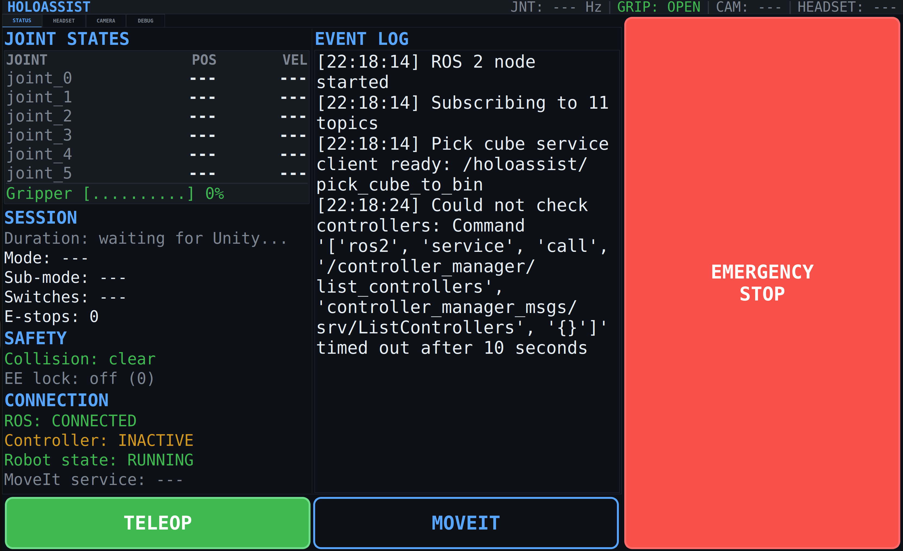
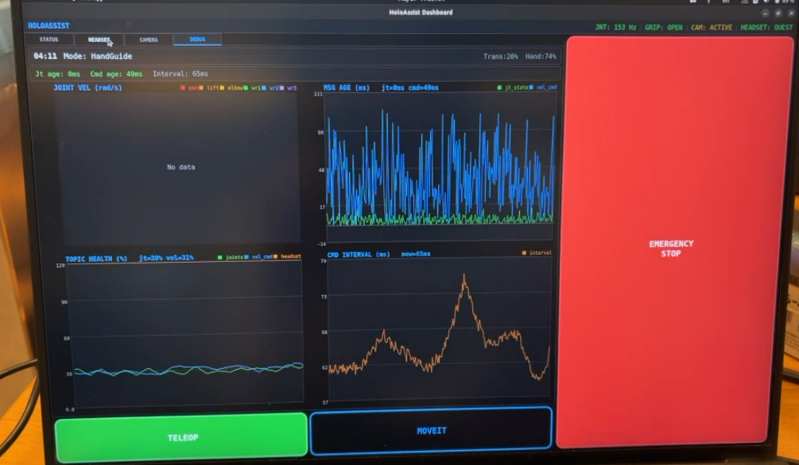
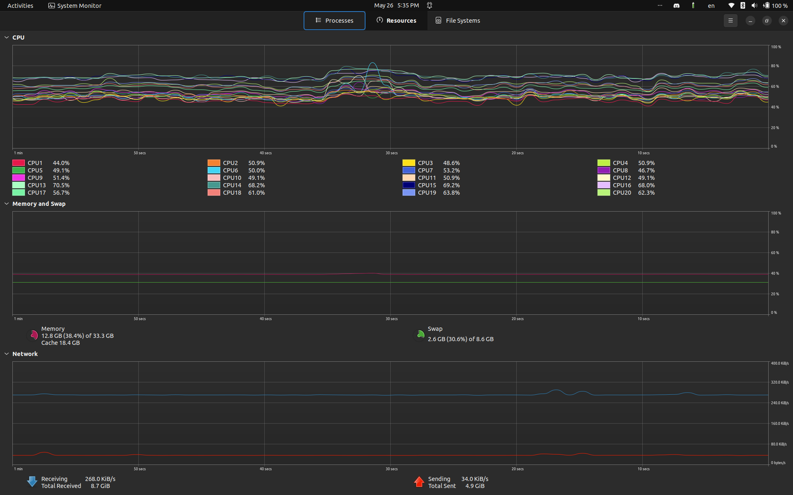

HoloAssist — Getting Started
System overview, quick start commands, launch modes, Quest 3 connection, and troubleshooting.
HoloAssist integrates a Meta Quest 3 headset with a UR3e collaborative robot for real-time teleoperation, autonomous pick-and-place, and spatial AR visualisation. AprilTag-equipped cubes are detected at 20 Hz; MoveIt 2 drives the physical arm; Unity on the Quest 3 renders a holographic twin and accepts XR controller teleop commands over ROS-TCP-Endpoint.
| Subsystem | Lead | Status | Docs |
|---|---|---|---|
| Perception (AprilTag cubes) | John Chen | Working | perception.html |
| Autonomous Pick-and-Place | Oliver Lau | Working | autonomous.html |
| Teleoperation (Quest 3 XR) | Nic | Working | teleoperation.html |
| XR Visualisation (Unity) | Sebastian | Working | visualisation.html |
Run from the main repository. The current launcher enables perception, MoveIt, RViz, and the dashboard by default.
./scripts/calibrate.sh --robot-ip 192.168.0.194
Build and source the ROS 2 workspace before any launch command:
Build (first time or after source changes):
| Flag | Effect |
|---|---|
| --robot-ip <IP> | Connect to real UR3e or URSim at this IP. Omit for fake hardware mode. |
| --ros-ip <IP> | Bind IP passed to ros_tcp_endpoint; default is 0.0.0.0. |
| --no-perception | Disable camera + AprilTag + perception launch. Perception is enabled by default. |
| --no-moveit | Disable MoveIt and switch to teleop controllers. |
| --no-dashboard | Disable dashboard UI and bridge server. Dashboard is enabled by default. |
| --fake-gripper | Real UR arm + fake OnRobot gripper — required with URSim |
| --dashboard-fullscreen | Open dashboard fullscreen — designed for Steam Deck 1280×800 |
| --no-rviz | Suppress all RViz windows |
| --verbose | Print all subprocess logs to terminal |
Default IP: 192.168.0.194 — check the robot touchscreen if different.
The launcher prints the WiFi IP at startup — enter that in the Unity Quest app under ROS Settings, port 10000.
Use when the physical robot is not available. URSim runs Polyscope at 192.168.56.101 over a VirtualBox host-only network.
Wait for Polyscope started, then open Polyscope at http://localhost:6080 (noVNC). Navigate to Run Program → External Control. Do not click Play yet.
Once the launcher settles, click Play in Polyscope. The log confirms: Robot connected to reverse interface. Ready to receive control commands.
No robot IP = fake hardware mode. Perception, MoveIt, dashboard, RViz, ROS-TCP-Endpoint, and the IP beacon still start unless explicitly disabled.
PyQt5 dashboard designed for 1280×800 (Steam Deck). Tabs: Status · Headset · Graph · Stats · Latency · Session.
In normal mode, also starts bridge_server.py on port 9090 (WebSocket) for remote dashboard clients.
[0,0,0,0,0,0] × 10 to /forward_velocity_controller/commands, then switches controllers off. Hold RESUME for 5 s to re-enable.

After ./scripts/launch.sh --robot-ip 192.168.0.194:
| Check | Command | Expected |
|---|---|---|
| UR driver active | ros2 control list_controllers | joint_state_broadcaster [active] |
| MoveIt controller | ros2 control list_controllers | scaled_joint_trajectory_controller [active] |
| TCP endpoint | Port 10000 accepting connections | Unity can connect |
| Calibration TF | ros2 run tf2_ros tf2_echo base_link camera_link | Static transform appears |
| Cube poses | ros2 topic echo /holoassist/perception/april_cube_1_pose --once | Pose appears when cube is visible |
| Unity connection | Set ROS IP to WiFi IP printed at launch, port 10000, hit Play | Robot model appears in Quest |
Ctrl+C in the launcher terminal. The launcher sends SIGTERM, waits 2 s, then SIGKILLs all child processes.
If processes remain:
All logs go to /tmp/holoassist_*.log:

ur_ros2_control_node processes. Run: pkill -9 -f ur_ros2_control_node
tail -f /tmp/holoassist_ur_onrobot_driver.log
/detections and /holoassist/perception/debug_image are updating, then check the cube pose topic.